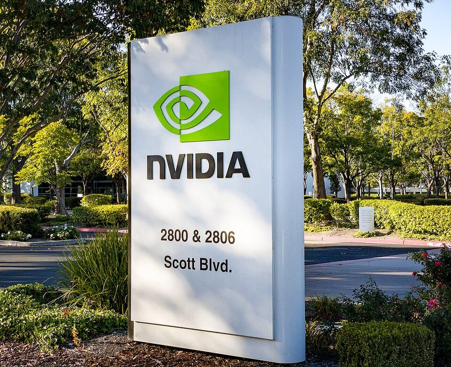

Машина · главное
Сто пять раундов одного человека
Nvidia была не только поставщиком видеокарт, но и крупнейшим частным инвестором всей ИИ-экосистемы: 105 раундов за год, часто — как самый крупный участник. Хуанг ушёл, и вместе с ним из отрасли уходит поручитель, под которого считали оценки.
Тринадцатого ноября стало известно: Дженсен Хуанг, соучредитель и бессменный исполнительный директор Nvidia, уходит. Тридцать три года во главе. Для рынка это не кадровая новость — Хуанг был не только человеком, который делает видеокарты, но и крупнейшим частным инвестором всей ИИ-экосистемы.
По данным PitchBook, в этом году Nvidia участвовала в 105 раундах и почти всегда входила в них крупнейшим инвестором. «Nvidia тянет почти каждый ИИ-стартап — от приложений до неоклаудов», — сказала TechCrunch Шамилла Бания из Dawn Capital. «Если это направление изменится, удар будет очень тяжёлым».
Решения часто принимал лично Хуанг. Умеш Падвал из Seligman Ventures знает его с тех пор, как сидел в совете Mellanox — производителя сетевых чипов, которого Nvidia купила примерно за 7 миллиардов в 2020-м. По его словам, большинство значимых решений об инвестициях шло от Дженсена, а не от процедуры.
Масштаб ставок виден по именам: CoreWeave — когда компания была ещё частной; два раунда Crusoe, включая Series E на 1,4 миллиарда; Hugging Face за 13 миллиардов, сделка должна закрыться в 2027-м; Mistral AI, Lambda, Black Forest Labs. В прошлом году Nvidia вложила 800 миллионов в раунд Reflection AI на 2 миллиарда — до того, как у открытого стартапа появилась заметная выручка.
Механика была удобной для всех, кроме самой Nvidia. Инфраструктурной компании, которой нужно 100–500 миллионов на видеокарты, чипмейкер давал половину — при оценке в миллиард и выше, и остальные инвесторы шли следом. «Когда Nvidia была в капитале, все чувствовали себя в безопасности», — говорит Падвал. Заодно это закрепляло стартапы на чипах Nvidia: инвестиция работала как способ удержания рынка.
Исполняющей обязанности гендиректора стала Колетт Кресс, финансовый директор компании. Ожидание, которое передают инвесторы: она консервативнее и не станет заливать те же деньги, чтобы держать на плаву раннюю стадию. Чеки станут реже и меньше, оценки — ниже, часть сделок встанет на паузу.
Насколько это заденет цену токенов — вопрос открытый. Дешёвый инференс последних двух лет стоял на трёх вещах: мощности, электричестве и открытых весах моделей. Nvidia финансировала как раз второе и третье — неоклауды и открытые модели вроде Mistral. Если поток денег иссякнет, первыми пострадают не флагманы, а те, кто строит мощность под чужие контракты.
Совпадение, которое стоит отметить: на той же неделе Google представила два новых чипа. Крупные облака и производители чипов могут подхватить часть обязательств — но, как говорит Дхармеш Тхаккер из Battery Ventures, вкладывать сотни миллионов в инфраструктурные компании без выручки так же охотно не станет никто.

Коротко
- ОтставкаДженсен Хуанг, соучредитель и CEO Nvidia 33 года; и. о. — Колетт Кресс
- Раунды 2026105 сделок с участием Nvidia, по данным PitchBook; часто — крупнейший инвестор
- Крупные ставкиCoreWeave, Crusoe (Series E на 1,4 млрд), Hugging Face за 13 млрд, Mistral AI, Lambda, Black Forest Labs
- Одна из сделок800 млн долларов в раунд Reflection AI на 2 млрд — до появления заметной выручки
- Что ждутболее консервативная политика: меньше и реже чеки, ниже оценки, пауза в части сделок
Что здесь факт, а что — обещание
Факт: отставка, назначение Кресс, 105 раундов за год, конкретные сделки (Hugging Face, Crusoe, Reflection AI) и цитаты инвесторов — это публикация TechCrunch и данные PitchBook. Цифры проверяемые, имена названы.
Обещание: «чеки станут меньше, оценки упадут» — это прогноз венчурных инвесторов, а не измерение. Никто из них не назвал ни суммы, ни срока; за этим стоит опыт, а не статистика. Через квартал это будет видно по раундам — и только тогда станет фактом.
Обещание: «кто-то подхватит» — тоже надежда. Подтверждено пока одно: два новых чипа Google на той же неделе. Заявления облачных гигантов о готовности финансировать инфраструктуру без выручки не звучали.
Вне номера: причины ухода — скандал вокруг Хуанга, и мы его здесь не разбираем: к экономике отрасли он отношения не имеет, а к газете — тем более.
Сеанс
Второй материал · 6 минутСорок шесть черепов из Дакворта
Флиндерс Петри выкопал в Абидосе гробницы первых фараонов и заподозрил, что свиту убивали при погребении, — но следов насилия не нашёл. Через сто лет судебная медицина нашла их на восемнадцати черепах из сорока шести.
Абидос, около 3000 года до нашей эры. Первые цари объединённого Египта строят там погребальные комплексы: гробницы, дополнительные камеры, ограждённые площадки для обрядов. Вокруг — ряды маленьких могил. У некоторых царей их сотни, и вопрос «зачем столько» висел над Абидосом целый век.
В 1920-х Флиндерс Петри раскопал эти могилы и заметил несоразмерность: слишком много людей вокруг одного человека. Он предположил жертвоприношение свиты — практику, при которой близких правителя убивают при его смерти, чтобы те служили ему и после. Смертельных повреждений Петри не нашёл и оставил гипотезу в подвешенном состоянии на сто лет.
Черепа он, впрочем, сохранил. Часть попала в Британию. Розелин Кэмпбелл из Университета Пердью нашла 46 из них в коллекции Дакворта в Кембридже и посмотрела заново — уже глазами судмедэксперта, а не археолога двадцатых годов.
На 18 черепах — 39% выборки — обнаружились линейные переломы, которые Петри считал естественным повреждением. Современные методы читают их как прижизненные, точнее — полученные в момент смерти: такие трещины ведут к быстрой потере сознания, внутреннему кровотечению и смерти. На некоторых видны и следы острого оружия, включая рубленую рану в области глаза.
Дальше начинается аккуратность. Булава, которой египтяне на росписях добивают врагов, оставляет вдавленные переломы, а здесь — линейные: скорее удар широким плоским предметом либо падение с высоты. Падение исключить нельзя, но перелом такой силы обычно ломает и остальной скелет, а в записях и фотографиях Петри такого нет. Про остальные 28 человек сказать нечего: они могли умереть своей смертью, а могли быть задушены — на костях это не читается.
Главная потеря — сами скелеты. Петри большую часть останков закопал обратно, и проверить всё уже нельзя. Кэмпбелл честно говорит, что при неограниченных ресурсах искала бы, где теперь лежат эти тела. Пока есть 46 черепов, статья в Frontiers in Environmental Archaeology и книга о насилии и жертвоприношении в Раннем царстве, которая выходит в Routledge.
По-настоящему жутко здесь не количество, а должности. На части могильных табличек Петри прочёл имена и звания: низшие и средние чиновники, ремесленники. Люди с профессией, похороненные в ряд, в простых камерах, с парой глиняных сосудов, медным инструментом и маленькой фигуркой из слоновой кости. Свита — это не абстрактные «жертвы эпохи», а штатное расписание, ушедшее в землю вместе с начальником.
Инструментарий
Заметка · 4 минутыКошелёк для агента
OpenAI выпустила ChatGPT Wallet: агенты Dots теперь могут платить за покупки, но каждая трата требует биометрии. Карта подменяется платёжным токеном, а к концу обещают делегирование с лимитами.
Сначала был запуск платформы агентов Dots, теперь — кошелёк для них. ChatGPT Wallet раскатывается для подписчиков ChatGPT Pro в США старше 18 лет, с американским платёжным адресом и картой, выпущенной в США: American Express, Chase, Mastercard или Visa.
Механика осторожная. Агент может совершать покупку по вашему запросу, но перед оплатой каждый раз спрашивает разрешение, а подтверждение требует биометрии — Face ID или отпечатка. Дальше, как в Apple Pay, номер карты подменяется платёжным токеном: ни агент, ни магазин настоящих данных не видят.
Обещанное продолжение важнее текущей версии: OpenAI рассчитывает, что «пользователи смогут полностью делегировать покупки агенту, задав параметры — лимиты расходов, категории товаров, периоды времени, — и заранее одобрить такие траты». Именно на этом шаге агентная торговля либо станет массовой, либо упрётся.
Упрётся она, скорее всего, в чужие правила. Часть магазинов агентов ограничивает или блокирует: в этом году Amazon закрыл доступ агентам Muse от Meta. OpenAI прямо пишет, что для работы кошелька сайтам нужно перестать блокировать агентов, а платёжным и риск-системам — научиться отличать их покупки от мошеннических.
Небо
Заметка · 4 минутыРаз в сто тринадцать дней
Chandra нашла причину повторяющихся вспышек звезды AT 2016blu: рядом с ней скрытый компаньон — нейтронная звезда или чёрная дыра, которая каждые 113 дней срывает с неё вещество.
Пятнадцать лет астрономы смотрели, как звезда в галактике NGC 4559 регулярно разгорается и гаснет. Между 2012 и 2026 годом насчитали как минимум 27 вспышек — примерно раз в 113 дней. Каждая была такой яркой, что походила на взрыв сверхновой, но звезда после неё оставалась на месте. Такие объекты и называют «самозванцами сверхновых».
AT 2016blu — яркая голубая переменная, её масса не меньше 33 солнечных. Чтобы понять, что её раскачивает, нужны были рентгеновские данные, снятые точно в момент вспышки. Команда Моиган Агаханлу из Виргинского университета подгадала наблюдения: в начале 2026 года звезда вспыхнула, и Chandra посмотрела на неё в марте по программе «цель возможности».
Рентген оказался в сто с лишним раз ярче, чем в наблюдениях 2001–2002 годов, до начала вспышек. Объяснение: у звезды есть компаньон — нейтронная звезда или чёрная дыра звёздной массы, — и они ходят по вытянутой орбите. На сближении компаньон захватывает вещество, выброшенное гигантом, оно разгоняется почти до скорости света, раскаляется и светит в рентгене. Это же излучение подсвечивает окружающий газ, и тот светится в оптике — отсюда регулярные «вспышки».
Это первое рентгеновское обнаружение объекта такого класса и первая находка подобной пары. AT 2016blu достаточно ярка, чтобы считаться кандидатом в ультраяркие рентгеновские источники, — а значит, часть загадочных ULX может быть устроена так же. Оптику собирали автоматический телескоп KAIT, обсерватории Las Cumbres и больше тридцати астрономов-любителей AAVSO.
Тело
Заметка · 3 минутыСелезёнка после вируса
У мышей, переживших острую вирусную инфекцию, в селезёнке оставался фиброз, а иммунный ответ на новые угрозы — ослабленным. Привитые до заражения мыши этих последствий не получили.
Лаборатория инфекционной биологии Universitat Pompeu Fabra под руководством Андреаса Майерханса смотрела не на то, как мышь болеет, а на то, что остаётся после. У животных с острой вирусной инфекцией вирус уходил, а иммунная система не восстанавливалась: ответ на новые угрозы оставался слабым.
Причина — структурная. Пока иммунитет добивал вирус, в селезёнке развивался фиброз, накопление рубцовой ткани, и нарушалось расположение иммунных клеток внутри органа. Из-за этого ломались взаимодействия, нужные для активации T-клеток, — тех самых, что распознают и уничтожают заражённые клетки. Орган выглядел целым и работал хуже.
«Инфекцию можно взять под контроль, но это не значит, что организм полностью восстановился», — говорит первый автор работы Паула Себольяда Рика. Ключевая оговорка: всё это на мышах, и переносить вывод на людей напрямую нельзя — но проверять на людях теперь есть что.
Второй результат важнее первого. Мыши, привитые до заражения, фиброза и провала в иммунном ответе не получили. То есть вакцина в этом опыте работала не только как защита от болезни, но и как защита от её последствий — того, что обычно не видно и не болит.
Книги
Заметка · 3 минутыМиллион подержанных книг
Alibris договорилась продавать подержанные книги на Temu: больше миллиона названий, локальные склады и доставка по США. Год назад у компании была такая же сделка с Shein.
По данным Publishers Weekly, Alibris — крупный агрегатор букинистики — заключила сделку, по которой больше миллиона книг станут доступны на Temu. Это часть программы Local Seller: книги подбираются, хранятся и отправляются внутри США, то есть цепочка поставок не меняется, меняется только витрина.
Для Temu это выход за пределы нынешнего ассортимента — в основном поделок и хобби-изданий, часто привезённых из-за рубежа. Для Alibris это второй такой шаг подряд: в прошлом году компания договорилась с Shein. Модель одна — широта и скорость, даже ценой того, что букинистика оказывается на одной полке с дешёвым ширпотребом.
Репутационный фон у площадки тяжёлый: Temu не раз обвиняли в нарушениях приватности и прав интеллектуальной собственности, а исследование конгресса США указывало на высокий риск принудительного труда в цепочке поставок. Literary Hub добавляет: наблюдать за этим тоскливо, потому что всё, включая подержанные книги, стекается в одни и те же вёдра.
Практический вывод для автора и издателя: витрин становится меньше, а каналов сбыта — нет. Если ваша книга не продаётся на этих площадках напрямую, её всё равно продают там — вторичным рынком, мимо вас. Это давняя история букинистики, просто теперь она быстрее и на один клик ближе.
Тяжёлый звук
Заметка · 4 минутыПора идти
Al Jourgensen объявил последний альбом Ministry — «Hate to Go – Take Out or Delivery» — и последний тур. С Полом Баркером, вернувшимся в состав, и с объяснением, почему сорок пять лет хватит.
В среду Йоргенсен пришёл в эфир Loudwire Nights — и говорил так, как говорят люди, у которых всё решено. «Hate to Go – Take Out or Delivery» — последний студийный альбом Ministry. Дальше — прощальные концерты и точка.
Он и раньше считал, что последним будет «Hopiumforthemasses» 2024 года. «Я так думал, но группа сказала: нет, у этого мула остался ещё один пинок. Надевай большие штаны, дедушка, и поехали». Условие было одно: свести концы и отдать поклон Полу Баркеру, без которого, по его словам, ничего бы не вышло, — и вернуть часть персонажей вроде Джоша Брэдфорда из Revolting Cocks.
«Эти песни — идеальное подведение итогов всего, что мы сделали. Это почти сборник лучших вещей Ministry, только они ещё не хиты. Если это звучит как Ministry, пахнет как Ministry, выглядит как Ministry и крякает как Ministry — значит, это утка».
Про уход он говорит без пафоса: «Никакой большой драмы. Я не цепляюсь за Ministry, не обещаю уйти и не возвращаюсь через год. Хочу сломать эту традицию и правда сделать то, что сказал, — потому что пора, и мы с этим смирились. Мне не нужны ни деньги, ни хлопоты, и уж точно не нужно повторять одно и то же, когда ничего не меняется». Про сорок пять лет в индустрии: «Они проглотили меня в 1983-м и протащили через пищеварительную систему, но я как-то нашёл выход».
Факел он передаёт молодым — из недавних совместных дат называет Twin Tribes и надеется, что их не съест та же система. Редакционный вывод: последний альбом индастриала, который стоило ждать, выходит у человека, честно сказавшего, что ему больше нечего добавить. Это редкость — чаще уходят молча и возвращаются с туром.